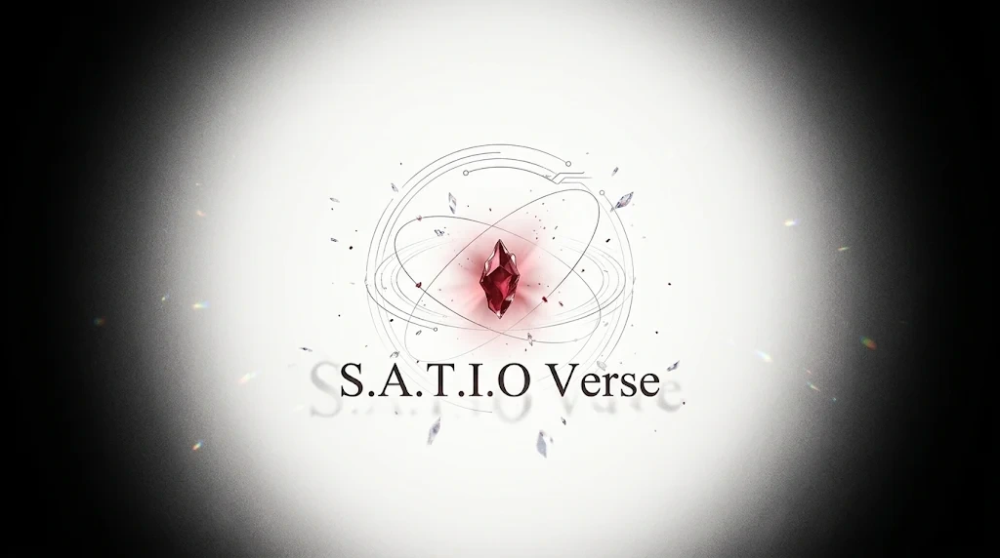
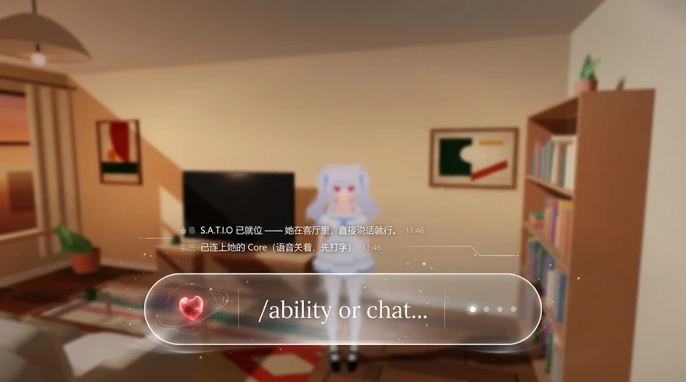
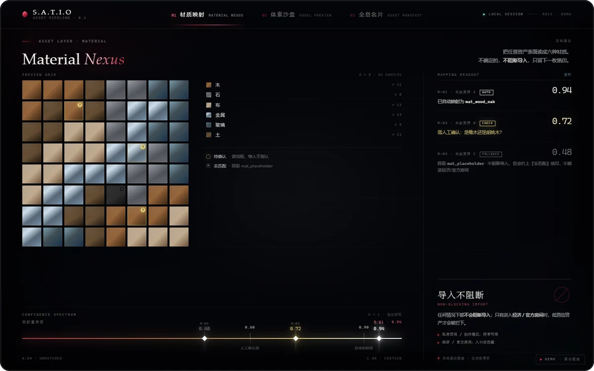
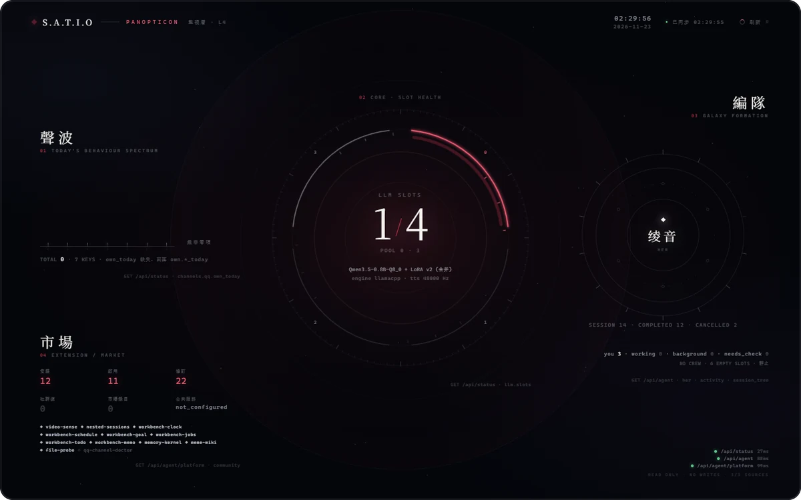
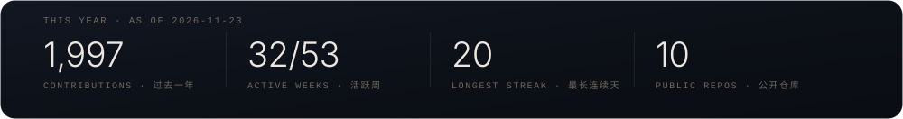
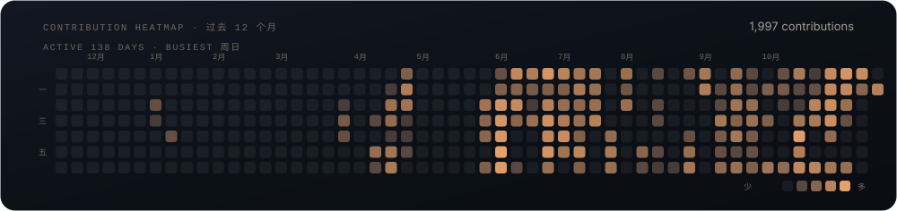
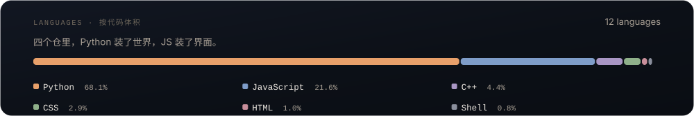
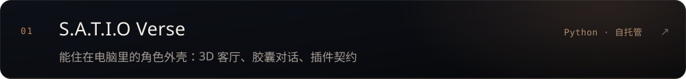

Tanora001 / README.md

你好，我是 Tanora Vic。
我在做一件很具体的事：把一个「能住在电脑里的角色」真的写出来 —— 有房间、有声音、有情绪，也能顺手替你干点活。模型跑在本机，密钥不出门；没有模型的时候它退化成 mock，不假装自己很聪明。

她就在客厅里，直接开口说话就行。这张是刚跑起来的窗口截图，不是渲染图。
我想造的东西

世界是怎么搭起来的
世界不是画出来的，是按契约拼起来的：能改的归服务器，好看的归客户端，同一份清单对账。


材质映射台：把外部资产的表面对到自家调色板。拿不准的标「待确认」，但从不阻断导入。
控制台
她此刻在想什么、记忆里有什么、市场里有什么 —— 一块屏看完，只读不写。

模型插槽 1/4、记忆编队、插件市场 12 安装 / 11 启用 / 22 禁止，全都是真实运行态。
一些数字
这些数字是现抓的，不是装饰。



在做的事



技术栈

三条底线
本机优先 —— 对话、语音、记忆都留在你自己的机器上。自托管不是姿态，是默认路径。
契约先行 —— 插件、世界、能力共用一份契约；往里加东西，不用改内核。
不表演 —— 能力边界写清楚：能做什么、暂时不能做什么。宁可少说，也不装作会。
最近在折腾
- 3D 客厅里的角色与动作 —— three.js r180，先把观感跑通，再谈真实模型
- 声音：GPT-SoVITS v5turbo，首包压到 1 秒级，音色和情绪分开调
- 插件市场与「装前契约报告」：先看清一个包要动什么，再决定装不装
代码 Apache-2.0 · 文字与设定 CC BY-NC 4.0 · 想商用，欢迎先来聊一声